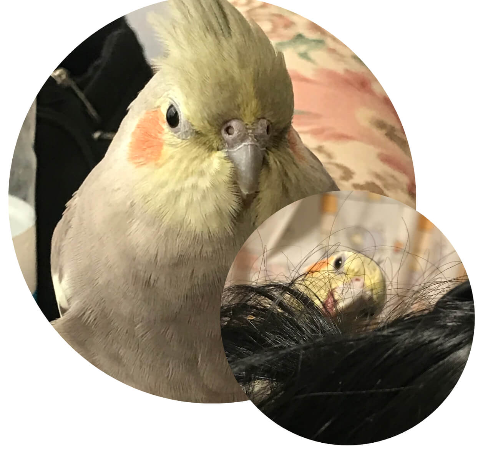
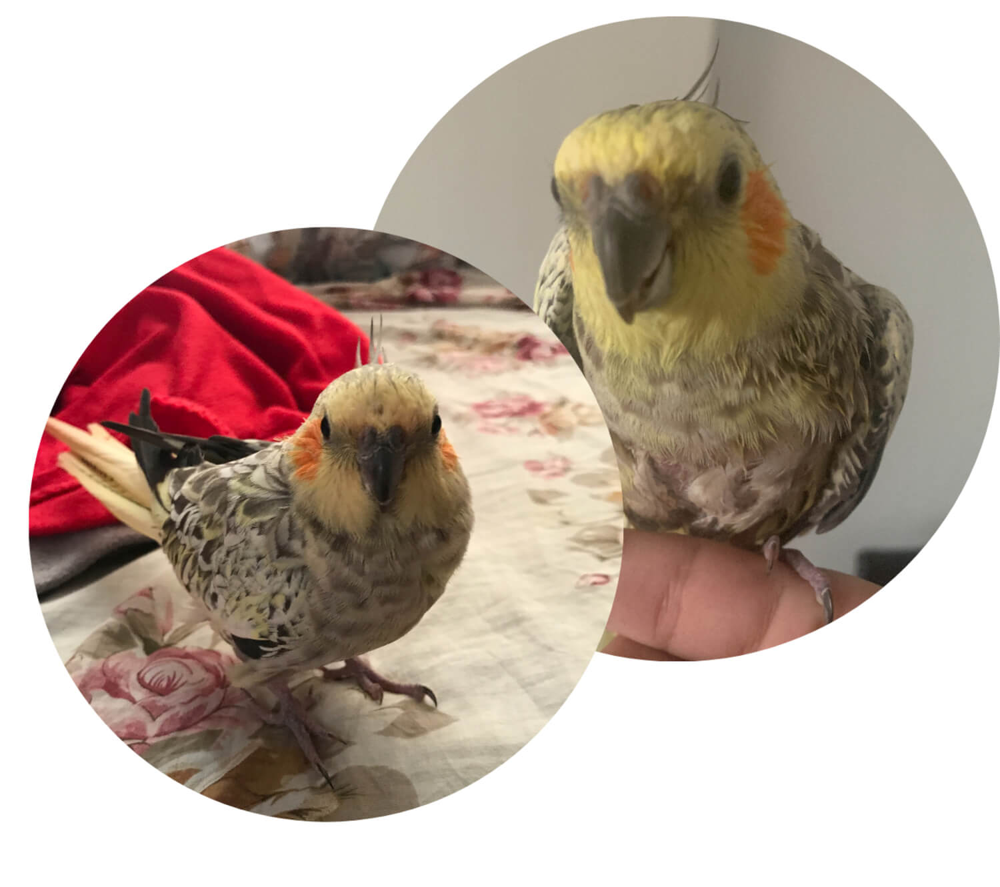

Mina papegojor
Butta (Lilla ankungen)
Min och buttas vänskap började för 2 år sedan, i början av 2019. Hon flög in på min balkong och träffade fönstret. Hon var skadad och behövde hjälp, jag gav henne mat och vatten och blev snabbt kär i henne, jag visste att det var en "hon" för att hon hade lagt några infertila ägg. Det är nämligen svårt att särskilja honor och hanor hos papegojor annars.

Det finns inte heller något tydligt sätt att veta hur gammal en papegoja exakt är om du inte haft de kläcktes från sina ägg, men jag antar att Butta är i intervallet 3-7 år gammal. Hennes namn Butta betyder på arabiska "lilla ankungen", något som passar henne perfekt!
Sötnosen älskar att äta frön som gör henne lite fet, men därför jag ger henne också några speciella pellets som är mycket näringsrika för hennes lilla kropp. Hennes personlighet är väldigt intim, kramgo, hyperaktiv och energetisk. Butta är en nymfkakadua, eller även kallat cockatiel! De kännetecknas av deras gula, vita och gråa färg samt deras röda kinder. Hon älskar också när någon masserar hennes huvud och under hennes lilla näbb så mycket, hon känner sig också ibland busig och kräver kyssar (vilket jag alltid ger henne med glädje för hon är trots allt min lilla sötnos).
Katkoota (Lilla kycklingen)
År 2020 fick en familjemedlem Katkoota från någon som ville bli av med henne för att hon inte var ”tam”, vad människor inte inser är att fåglar har känslor och kännande, och de känner rädsla och kärlek på samma nivå som vi människor gör. Du kan inte bara adoptera ett barn och förvänta dig att de är väluppfostrade, du måste ta hand om dem och få dem att känna att du alltid kommer att vara där för dem oavsett vad. När jag fick Katkoota var hon en blyg och ängslig liten bebis (jag säger att hon är en bebis för att hon är liten och söt).

Katkootas personlighet är reserverad, pratglad, ångestfull, hon älskar egentid men samtid mycket kärleksfull! Hennes namn betyder på arabiska "lilla kycklingen" som också passar henne väldigt bra!
Uppskattningsvis antar jag att hon är ungefär 5-7 år gammal men det är som sagt mycket svårt att exakt veta en papegojas ålder. Katkoota är liksom Butta en nymfkakadua eller cockatiel! Hon är inte särskilt bra på att flyga, till skillnad från Butta som är ett absolut proffs och kan göra flygtrick, men jag älskar henne såklart fortfarande lika mycket. Det är inte hennes fel att hon var i ett ovårdnade hem. Men som tur är hon är i ett bra hem nu!
Mina personliga råd & erfarenheter
Mina personliga råd
Om du har tid, utrymme och förmågan att vara tålmodig och ta hand om en sådan underbar varelse, behöver du inte ens fundera över det. Jag kan garantera dig att du har kommer att skapa det djupaste bandet och relationen du någonsin har haft med ett husdjur med din egna söta lilla papegoja.